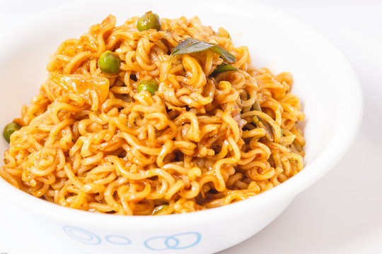
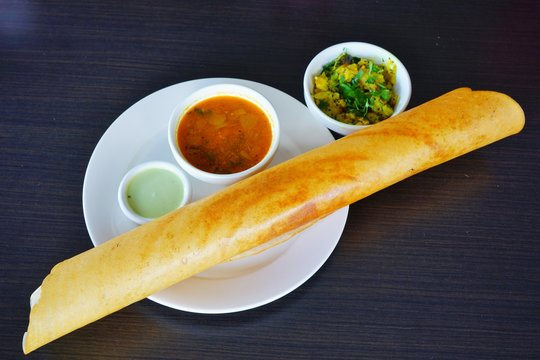

Receipe
This article is about culinary recipes. For a discussion of semiconductor IC recipes, see Semiconductor
fabrication. A recipe in a cookbook for pancakes with the prepared ingredients A recipe is a set of
instructions that describes how to prepare or make something, especially a dish of prepared food.
A sub-recipe or subrecipe is a recipe for an ingredient that will be called for in the instructions for
the main recipe.
About My Receipe
My Receipe is about Breakfast Receipe
My Receipes are:
- Maggie
- Upma
- Dosa
About Maggie:

Maggie 2min Noodles
Tomato Kecthup
oil
cumin seeds
Tomato (Finely chopped)
Onion (Finely chopped)
peas
Salt
Procedure
- Prepare ingredients as mentioned in the list
- Heat the oil and then rost the cumin seeds in it
- Then,toss in the tomatoes,the onions and cook them well
- Add the peas and the Maggie Tomato Kecthup,give it a stir, and let them cook for a while!
- Cook one pack of MAGGI masala noodles and transfer it onto a dish
- Put the cumin-tomato-onion mix right on top of the MAGGI noodles and you are ready to serve
About Upma:
 Rava
Aromatics
Lentils
Nuts
Spices
Herbs
Onions(finely chopped)
Green Chillies(chopped)
Ginger(finely chopped)
Coriander leaves
Curry leaves
Cashews
Chana dal
Urad dal
Rava
Aromatics
Lentils
Nuts
Spices
Herbs
Onions(finely chopped)
Green Chillies(chopped)
Ginger(finely chopped)
Coriander leaves
Curry leaves
Cashews
Chana dal
Urad dal
Procedure
- heat a pan or kadai first
- add 1 cup rava or cream of wheat
- begin to roast the rava
- stir often while roasting the rava
- rava should become fragrant and start to look dry,separate and crisp
- don't brown the rava
- once the rava becomes fragrant and starts to look dry and crisp,switch off the flame
- put the roasted rava on a plate and set aside
- in a pan,heat 2 tablespoons ghee
- lower the heat
- add 1 teaspoon mustard seeds
- when you hear the crackling sound of mustard seeds,it means getting fried
- now add 1/2 teaspoon cumin seeds
- 1 teaspoon chana dal and urad dal
- stirring often fry until the chana dal and urad dal begin to brown a bit
- immediately add 10 to 12 cashews and begin to fry on a low to medium low heat
- by the time the cashews get golden the dals should also be golden
- now add the 1/3 cup of finely chopped onions
- saute the onions until they soften and become translucent on a low to medium-low heat
- then add 1 teaspoon chopped green chillies,1 teaspoon chopped gingerband 8 to 10 curry leaves
- mix well and saute for a few seconds
- then add 2.5 cups water to this mixture
- add salt as required and mix well
- stir again on a medium to high flame ,heat the water and let it come to a rolling boling
- when water comes to a rooling boil,lower the flame to its lowest
- then add the rava in 4 to 5 batches with a spoon
- once you add the first batch of rava, stir and mix immediately
- continue to add and stir the rava up to last batch
- cover and allow the rava upma to steam for 2 to 3 minutes on a low heat
- trun of heat and ravais cooked well
- upma is ready
About Dosa

Grain rice
Urad dal
Water
Salt
Onion(chopped)
Green chillies(chopped)
Ghee
Black mustard seeds
Chana dal
Sprig curry leaves
Tumeric powder
Potatotes
cocount,cilantro and tomato chutney
procedure
- soak rice and urad dal in separate bowls for 4-6 hours
- process rice and urad dal mixture in commerical grinder
- while grinding add water a cup at a time until it reaches the consistency of pancake batter
- salt to taste
- cover mixture and let sit over night
- do not rergigertate
- add oil to a skillet
- shake mixture over the flame until golden brown
- add curry leaves,green leaves and onions
- sprinkle turmeric powder and salt ,stir
- break up boiled potato into small bowl with a flat bottom
- pour refrigerated dosa mixture into a small bowl with flat bottom
- pour batter into a greased skillet
- immediately,starting from the center,begin forming a circular shape
- brush on ghee to frying dosa
- place filling near the center of dosa
- lightly lift the edges of the dosa
- begin rolling from the edge of dosa as wrap
- remove dosa from hot top